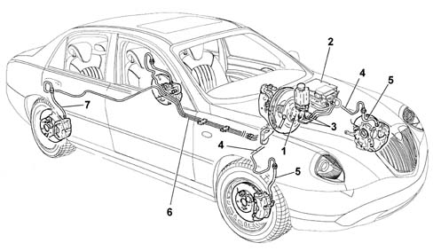

Introduction ABS SYSTEM PIPES
- Path
- Descriptions > 33 BRAKES > 3340 ANTI-LOCK BRAKING SYSTEM (A.B.S.) > 3340B ABS SYSTEM PIPES > Introduction ABS SYSTEM PIPES
- Kind
- system description
- Applies to
- all engines; all production periods
- Interactive page
- https://sloeber94.github.io/elrnDB-lThss/en/#/153200
Applies to: all engines; all production periods

- 1 - Brake pump
- 2 - ABS control unit
- 3 - Pipes from brake pump to ABS control unit
- 4 - Rigid pipes from control unit to flexible front brake pipes
- 5 - Flexible front pipes
- 6 - Rigid pipes from control unit to flexible rear brake pipes
- 7 - Flexible rear brake pipes